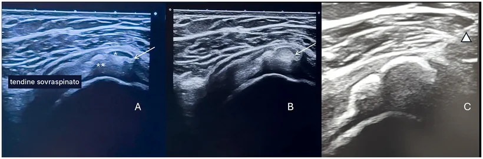

Il barbotage è il lavaggio di una calcificazione del tendine. Sotto guida ecografica si introduce un ago nel deposito di calcio, si inietta soluzione fisiologica e la si riaspira, portando via il materiale che si è sciolto.
Si esegue in ambulatorio, in anestesia locale, in una sola seduta. Riguarda la spalla nella grande maggioranza dei casi.

Quando si propone
Il bersaglio è la tendinopatia calcifica della cuffia dei rotatori: un deposito di calcio dentro il tendine che provoca dolore, spesso intenso e notturno.
Non tutte le calcificazioni vanno trattate. Un deposito che non dà sintomi si lascia dov'è: compare di frequente nelle ecografie e nelle radiografie di persone senza alcun disturbo alla spalla. Si interviene quando la calcificazione fa male, dopo che riposo, antinfiammatori e fisioterapia non sono bastati.
Conta anche com'è fatto il deposito. Il lavaggio riesce meglio quando il calcio è ancora molle o fluido; dà risultati peggiori quando è piccolo, molto duro, già migrato nella borsa o esteso dentro l'osso.
Com'è la seduta
Si sta sdraiati o seduti, con il braccio ruotato in modo da portare il deposito sotto la sonda. La pelle viene anestetizzata, poi il medico introduce l'ago nel deposito guardandolo sullo schermo. Da quel momento inietta e riaspira soluzione fisiologica, in genere tiepida, finché il materiale smette di uscire. A seconda della tecnica si usano uno o due aghi.
Al termine si infiltra abitualmente un cortisonico nella borsa sotto l'acromion, perché il lavaggio irrita i tessuti attorno e nelle ore successive il dolore può aumentare.
L'intera procedura dura una ventina di minuti. Si torna a casa subito.
Dopo la procedura, fai
- Metti in conto un aumento del dolore per uno o due giorni: è la reazione attesa.
- Usa il ghiaccio e l'analgesico che ti è stato indicato.
- Riprendi i movimenti del braccio appena il dolore lo consente, senza forzare.
- Avvisa il medico se compare febbre o se il dolore continua a crescere oltre il terzo giorno.
Non fare
- Non immobilizzare la spalla al collo per giorni: la rigidità è il rischio successivo.
- Non programmare lavori sopra la testa nella settimana seguente.
- Non ripetere il controllo ecografico dopo pochi giorni: il deposito si riassorbe nell'arco di settimane o mesi.
Quanto funziona, e rispetto a che cosa
Dopo il lavaggio il dolore si riduce e la spalla torna a muoversi; nei controlli successivi il deposito spesso è scomparso quasi del tutto.
Il confronto che interessa davvero è però quello con le onde d'urto, l'altra opzione per la stessa condizione. Nei primi mesi le due procedure si equivalgono;[2] a un anno di distanza il lavaggio controlla il dolore un po' meglio.[1] Il barbotage ottiene questo risultato in una seduta sola, le onde d'urto richiedono un ciclo.
Rispetto alla sola infiltrazione di cortisone nella borsa, aggiungere il lavaggio fa riassorbire il deposito più spesso.[1]
Va detto che le prove disponibili su questa procedura, pur favorevoli, non sono di qualità elevata, e che la scelta fra le due tecniche dipende anche da quanto il deposito è aggredibile con l'ago.[1][3]
Quando non si fa
- Infezione in corso, nella spalla o in generale.
- Disturbi della coagulazione non controllati.
- Calcificazione che non dà sintomi.
- Allergia nota all'anestetico locale o al cortisonico impiegato.
Sono invece situazioni in cui il lavaggio rende poco, e conviene discutere un'alternativa: depositi molto piccoli, calcio già migrato nella borsa, estensione del deposito dentro l'osso.
Effetti indesiderati
La complicanza di gran lunga più comune non è una complicanza vera: è l'aumento del dolore nelle prime quarantotto ore, che può essere marcato e che si risolve da solo. È prevedibile, e il cortisonico iniettato al termine serve proprio a contenerlo.
Più raramente si osservano un malessere passeggero durante la procedura, un livido nel punto di ingresso, un rialzo transitorio della glicemia dovuto al cortisone. L'infezione dell'articolazione è rara ma è il motivo per cui una febbre o un dolore crescente dopo il terzo giorno vanno segnalati subito.
Nel complesso la procedura è considerata sicura.[1]
Cosa è utile sapere prima
La calcificazione può sparire anche da sola. È una condizione che in molti casi si risolve nel tempo: il trattamento serve ad accorciare la fase dolorosa, non a evitare un esito altrimenti inevitabile.
Il dolore e il deposito non vanno di pari passo. Capita che la spalla smetta di far male mentre il calcio è ancora visibile, e capita il contrario. Il risultato si giudica su come stai, non sull'ecografia.
Dopo serve rimettere in moto la spalla. Tolto il deposito, resta un tendine che ha lavorato male per mesi: il recupero della forza e del movimento è la parte che determina il risultato a distanza.
Da dove vengono queste informazioni
- Sconza C, Palloni V, Lorusso D, et al. Ultrasound-guided percutaneous lavage for the treatment of rotator cuff calcific tendinopathy: a systematic review with meta-analysis of randomized controlled trials. European Journal of Physical and Rehabilitation Medicine 2024;60(6):995–1008. doi:10.23736/S1973-9087.24.08544-7
- van Noort DM, Louwerens JKG, Sierevelt IN, van Noort A. Comparable midterm outcomes for ultrasound-guided needling versus high-energy shockwave therapy for rotator cuff calcific tendinitis: a randomized controlled trial. Arthroscopy 2026;42(11):2485–2493. doi:10.1002/arj.70405
- Arirachakaran A, Boonard M, Yamaphai S, Prommahachai A, Kesprayura S, Kongtharvonskul J. Extracorporeal shock wave therapy, ultrasound-guided percutaneous lavage, corticosteroid injection and combined treatment for the treatment of rotator cuff calcific tendinopathy: a network meta-analysis of RCTs. European Journal of Orthopaedic Surgery & Traumatology 2017;27(3):381–390. doi:10.1007/s00590-016-1839-y
Scheda aggiornata il 16 novembre 2026. Prossima revisione prevista entro novembre 2028.